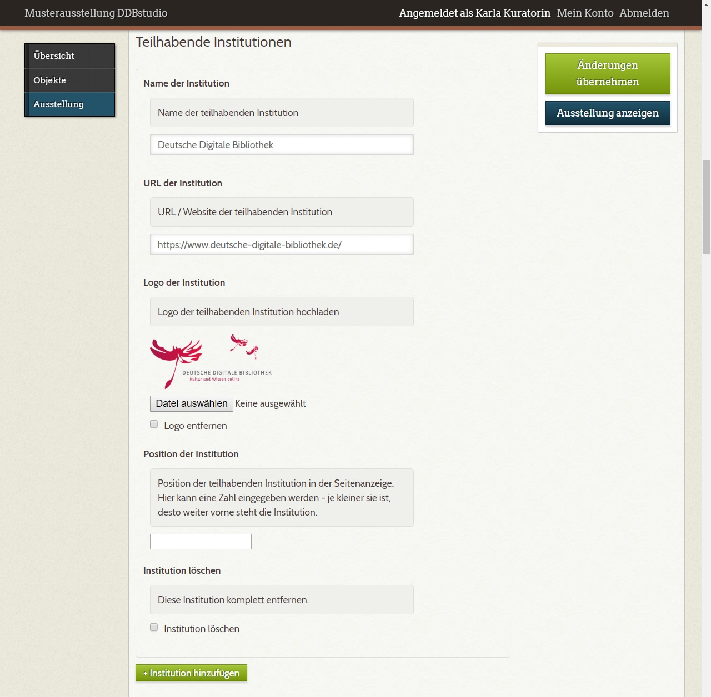

C.1 Die Ausstellung anlegen¶
Die ‚Exponate‘ Ihrer virtuellen Ausstellung haben Sie nun als Objekte angelegt, mit Metadaten versehen und mit Mediendateien verknüpft. Der nächste Schritt: Sie stellen diese Objekte zu einer Ausstellung zusammen.
Über den Menüpunkt „Ausstellung“ gelangen Sie auf die Seite „Ausstellung ... bearbeiten“. Hier geben Sie Angaben ein, die die Ausstellung im Ganzen betreffen: Titel, Startseite und Seite zum Team.
C.1.1 Metadaten der Ausstellung¶
Die drei Felder des Abschnitts „Metadaten der Ausstellung“ betreffen die Titelausgaben.
„Titel“ und „Untertitel“ werden auf der ersten Seite der Ausstellung ausgeben, der „Kurztitel“ erscheint in der oberen Navigationsleiste.
C.1.2 Gestaltung der Startseite¶
Die erste Seite Ihrer Ausstellung zeigt lediglich den Titel und den Untertitel der Ausstellung an. In diesem Abschnitt können Sie das Erscheinungsbild der Seite festlegen.
Sie haben prinzipiell zwei Optionen: Titel und Untertitel auf einem einfarbigen Hintergrund aus der vordefinierten Farbpalette oder auf einem bildschirmfüllenden Hintergrundbild.

Die Hintergrundfarbe wählen Sie durch Klick auf eines der farbigen Quadrate oder über die Auswahl des entsprechenden Wertes aus der Liste.
Ein Hintergrundbild stellen Sie ein, indem Sie über die Schaltfläche „Datei auswählen“ eine Grafikdatei hochladen. Der Dateiname wird dann neben der Schaltfläche angezeigt. Wenn Sie die Änderungen der Einstellungen übernehmen (grüne Schaltfläche oben rechts), erscheint ein Vorschaubild der Hintergrundgrafik. Wenn Sie ein bereits hochgeladenes Hintergrundbild durch ein anderes ersetzen möchten, laden Sie dieses einfach über „Datei auswählen“ und speichern über „Änderungen übernehmen“. Die Checkbox „Hintergrundbild entfernen“ gibt Ihnen die Möglichkeit, wieder zu einem einfarbigen Hintergrund zurückzukehren. Auch hier wird die Änderung erst nach Klick auf „Änderungen übernehmen“ wirksam.
Zur Auswahl geeigneter Hintergrundbilder
Die Hintergrundbilder werden seitenfüllend angezeigt. Wie groß der verwendete Bildschirm des Nutzers oder der Nutzerin ist, können wir nicht wissen. Das Bild sollte aber zumindest bei einem gängigen Desktop-Bildschirm von 1.920 x 1.080 px (Full HD) die volle Bildqualität bieten, also mindestens die genannten Dimensionen haben.
Für die seitenfüllende Anzeige des Hintergrundbildes wird der Bildausschnitt an die jeweilige Bildschirmporportion angepasst. Die Position des Hintergrundbildes lässt sich über ein Auswahlmenü steuern. Ob Ihr Hintergrundbild unter diesen Bedingungen gestalterisch und inhaltlich ‚funktioniert‘, probieren Sie am besten, indem Sie nach dem Einstellen im Frontend das Fenster Ihres Browsers in unterschiedliche Formate bringen.
Sie können übrigens auch freigestellte Bilder mit transparenten Hintergründen verwenden (.png mit Alphatransparenz). Dann erscheint z.B. ein freigestelltes Objekt vor farbigem Grund.
C.1.3 Teilhabende Institutionen¶
In diesem Abschnitt machen Sie Angaben zu den Institutionen, die am Zustandekommen der Ausstellung beteiligt waren. Diese Angaben erscheinen im Frontend auf der Startseite und der Teamseite, die fest eingebaut ist und von Ihnen nicht eigens angelegt werden muss.

Jede Institution hat ein Bündel von vier Eingabefeldern für den Namen der Institution, die URL der Internetadresse, auf die der Name verlinken soll, ein Logo und die Angabe der Position. Diese numerische Positionsangabe legt fest, in welcher Reihenfolge die Institutionen auf der Startseite (nur Name) und der Teamseite (Logo mit Name) ausgegeben werden sollen. Entscheidend ist die numerische Relation: Institutionen mit kleineren Zahlenwerten erscheinen weiter vorne.
Über die grüne Schaltfläche „+ Institution hinzufügen“ können Sie eine Eingabemaske für eine weitere Institution erzeugen.
Wenn Sie alle Angaben zur Ausstellung als Ganze eingegeben haben, übernehmen Sie die Änderungen; nun können Sie mit der Anlage der Seiten Ihrer Ausstellung beginnen.